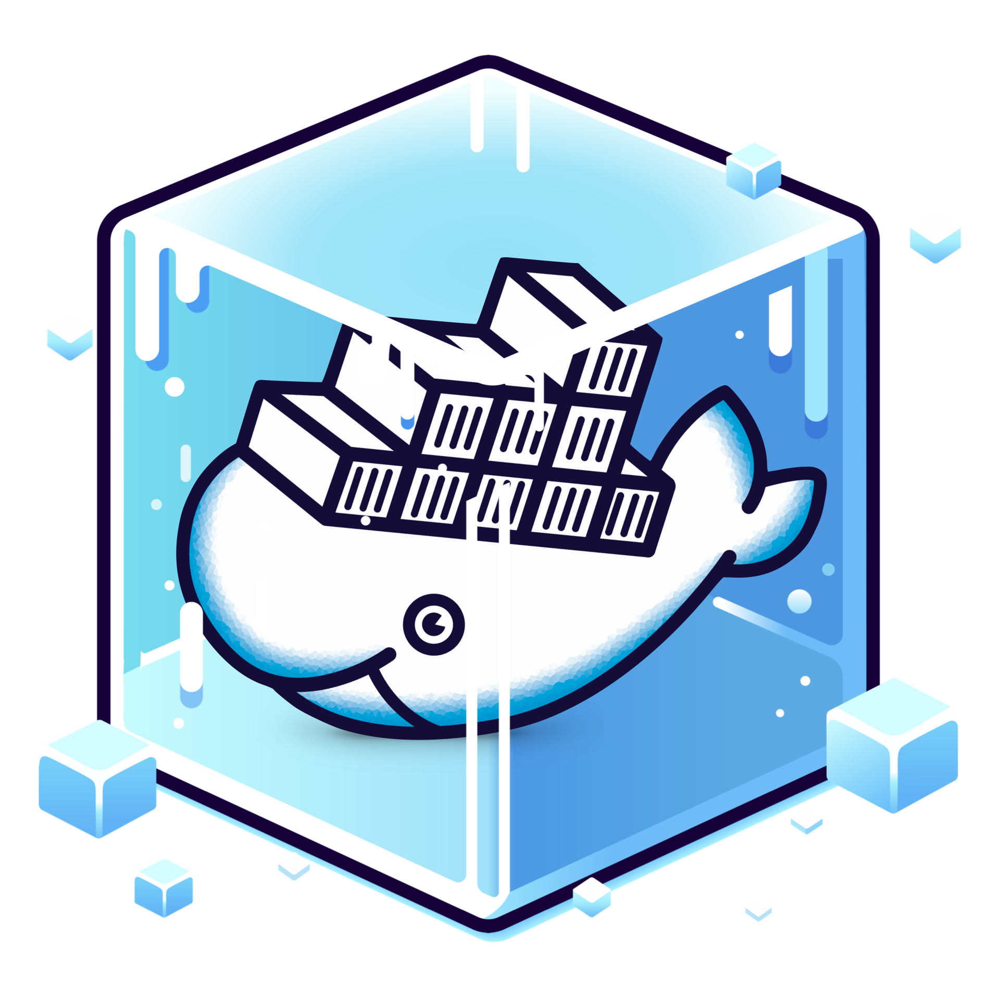
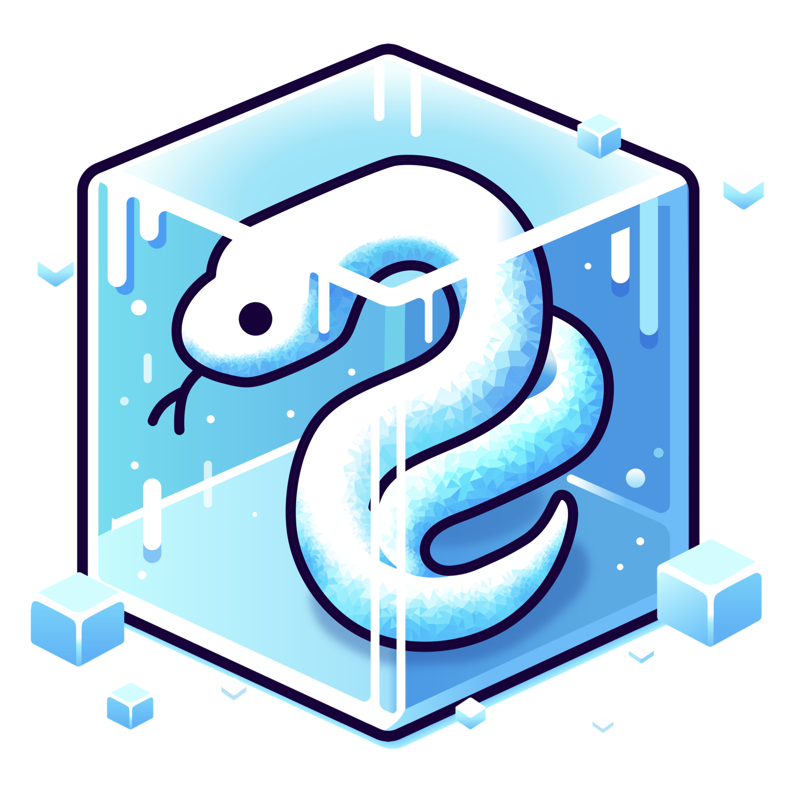
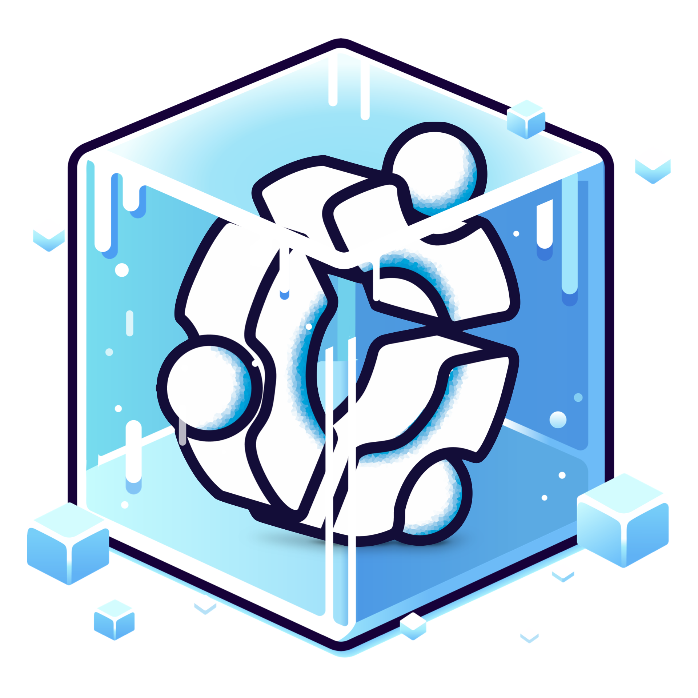
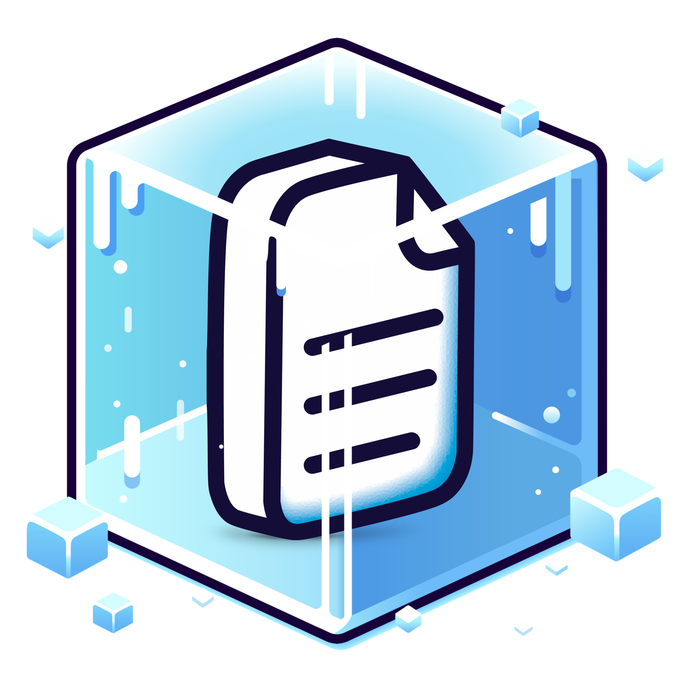
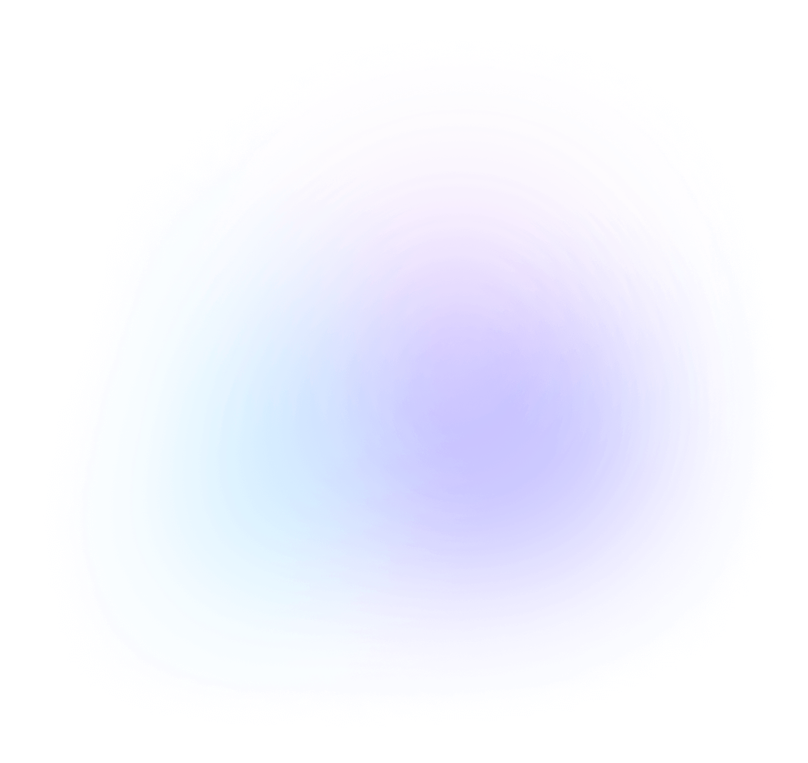
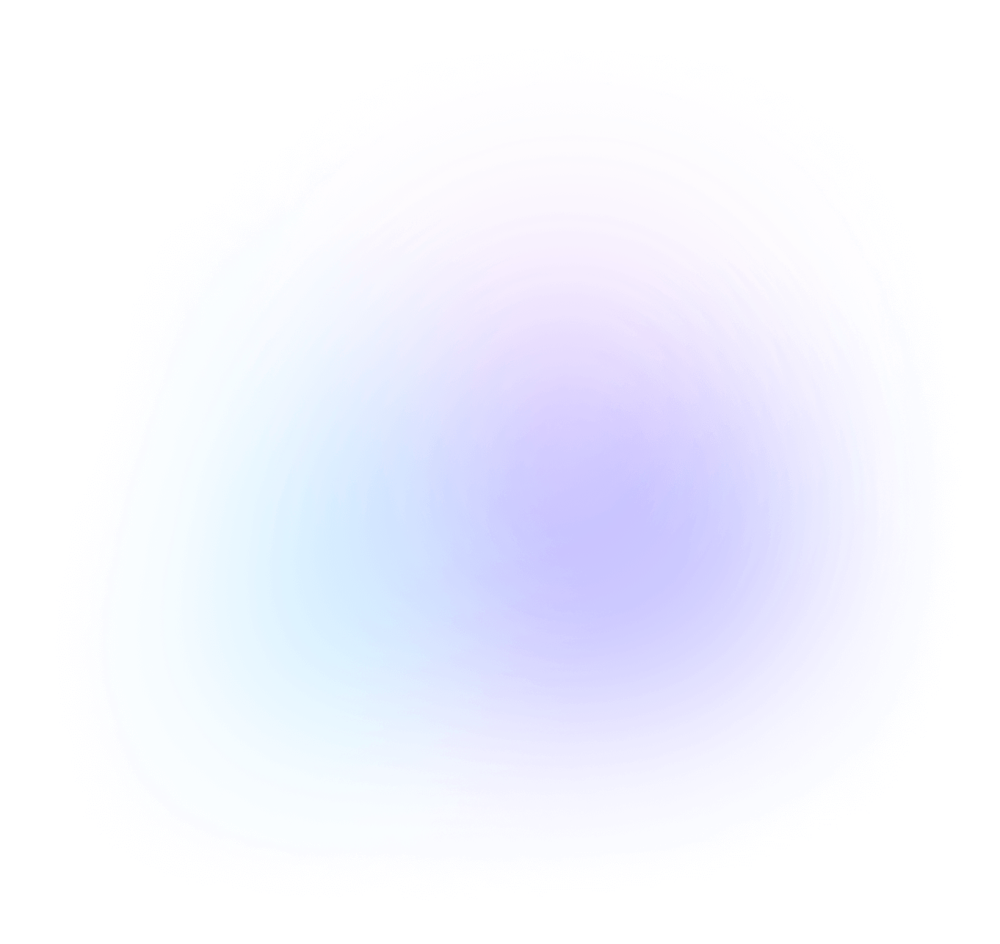

主要リポジトリをサポート
StableBuildは主要リポジトリの過去および現在のミラーを維持し、ソフトウェアが常にビルドできることを保証します。
Docker
DockerミラーはDocker Hubのプルスルーキャッシュとして機能します。プルしたコンテナはキャッシュに保存され、不変となるため、常に同じコンテナを取得できます。
Python
PyPIレジストリの完全な日次コピーにより、Python依存性を特定の日付に固定できます。パッケージ自体が固定されているかどうかに関わらず、常に同じパッケージ（依存性を含む）を取得できます。
Ubuntu / Debian / Alpine
Ubuntu、Debian、Alpineパッケージリポジトリの完全な日次コピーにより、aptやapkパッケージを特定の日付に固定できます。パッケージが更新・削除されても、常に同じバージョンをインストールできます。
Any file
当社のファイルミラーは任意のURLやファイルをキャッシュし、変更や削除から保護します。




 
重大なビルド問題を迅速かつ大規模に解決・防止
5分で導入
既存のDockerfileやビルドインフラに5分で統合し、すべての依存性を凍結できます。
時間とコストを節約
壊れたソフトウェアビルドは開発チームの業務を妨げ、多大な時間を浪費します。StableBuildは重大なビルドリポジトリの問題を数分で修正し、終わりのないリファクタリングサイクルを防ぎます。
Made for software professionals
ドキュメントを読む
Front-end Developers

Backend Developers